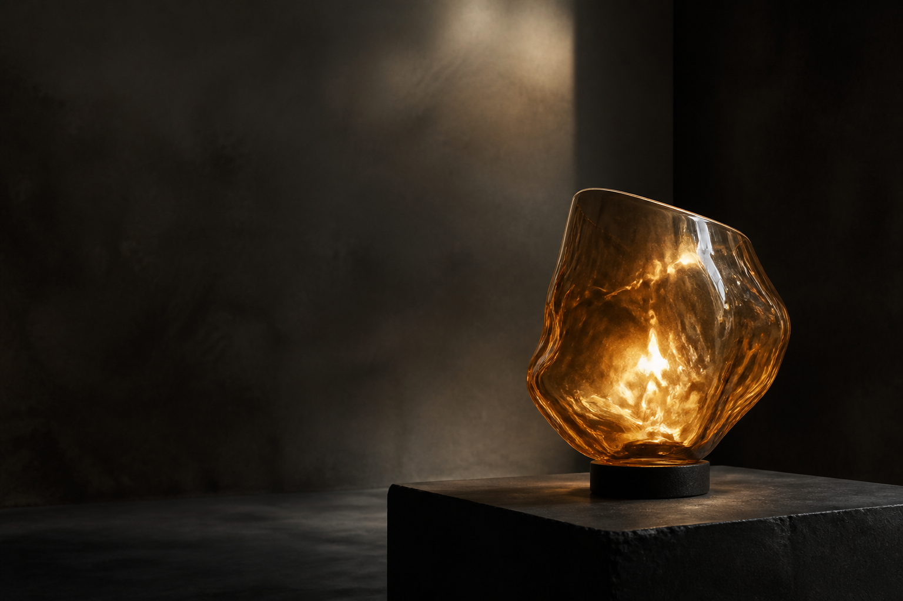

01
Gather
Begin with enough material to hold depth without losing translucency.

Handblown studies · No. 04
Light, shaped slowly.
Singular glass objects formed by heat, gravity, and the maker’s hand.
Enter the studio01 / Material
Each form begins as a molten gather. Nothing is stamped, mirrored, or corrected into sameness.
The glass carries evidence of the furnace: folds, bubbles, and softened edges.
The final silhouette is discovered while the material is still moving.
Warmth gathers in thick areas and slips through the thinner walls.
02 / Method
01
Begin with enough material to hold depth without losing translucency.
02
Rotate slowly so the shape can lean without collapsing into symmetry.
03
Stop before refinement erases the character created by the process.
Interaction study
03 / Studies
Dense at the base. Open at the crown.
Smoke glass with a single clear seam.
Opal glass that turns the source into atmosphere.
04 / Private viewing
Studio visits are held in small groups on Thursday evenings.
Private viewing
This native popover demonstrates action-specific motion: arrival is generous, dismissal is quick, and reduced motion preserves the same state change without travel.
studio@example.invalid